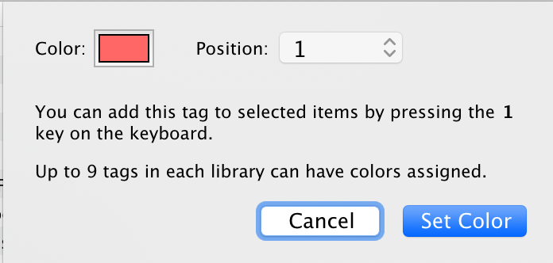

Assigning Colored Tags
Assigning a colored tag can make organizing your library and finding items easier.
Colored tags appear as small colored squares next to items' titles in the center pane. Colored tags are shown at the top of the tag selector and are always visible (even if not assigned to any visible items). Each colored tag is also assigned a number, corresponding to its position at the top of the tag selector. You can quickly add or remove a colored tag from selected items.
- Right-click the tag you want to assign a color.
- Select Assign Color.
- Select a color from the dropdown box and click Set Color.
